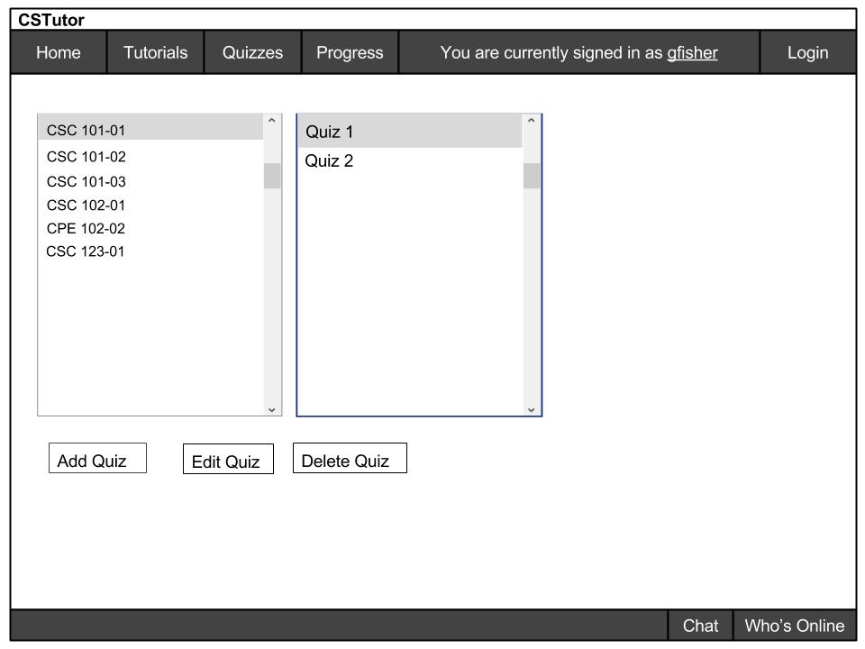
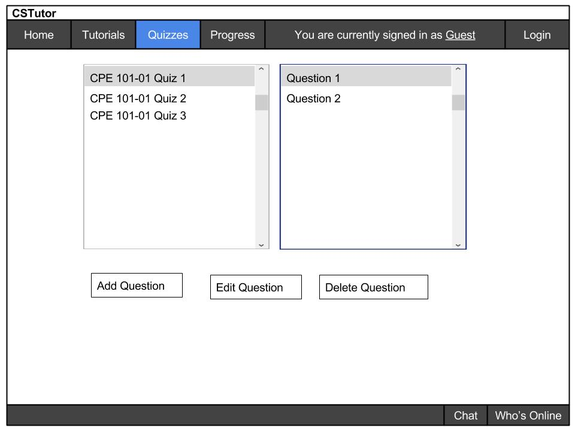
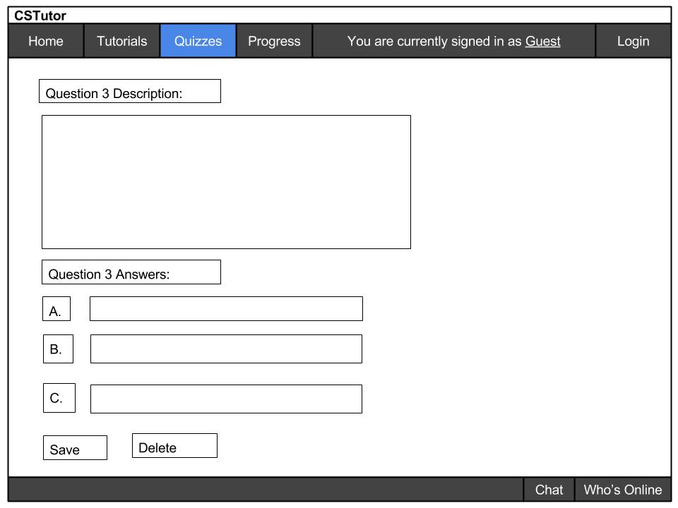
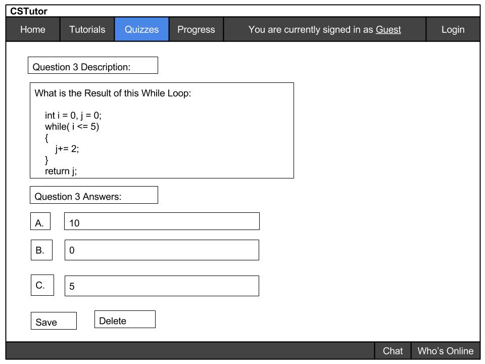

To create a quiz, the user must press on Quizzes on the toolbar. This feature is only available to professors. Once logged in, they are able to create a quiz.

Figure 2.5.1 Example of a Teacher adding/deleting a quiz
From figure 1, The teacher chooses to add or delete a quiz. Click "Add Quiz" and a new quiz generates on the class selected by the teacher. Select a quiz and click "Edit Quiz" allows the teacher to access the materials of the quiz. Click "Delete Quiz" and the quiz gets removed from the list of quizzes from the selected class section on the page.
Once the teacher add/edit a quiz, the teacher either add, deletes, or modifies a question:

Figure 2.5.2 Example of a Teacher Editing a Quiz
Here, the teacher adds, deletes, or modifies a question to the quiz number highlighted. The teacher click "add question" to generation question 3 after question 1 and question 2. To delete "question 1" from CPE101-01 Quiz 1, the teacher clicks "delete question". To edit question 1, the teacher clicks "Edit Question".
Here is an example of a teacher creating a new question:

Figure 2.5.3 Example of a creating a new question
For the new question, the teacher adds description to the problem, and include multiple choice answers below. Once the teacher is done, he/she clicks "save". Otherwise, the teacher deletes the question by clicking "delete".
Here is an example of a fully modified question:

Figure 2.5.4 Example of a created question